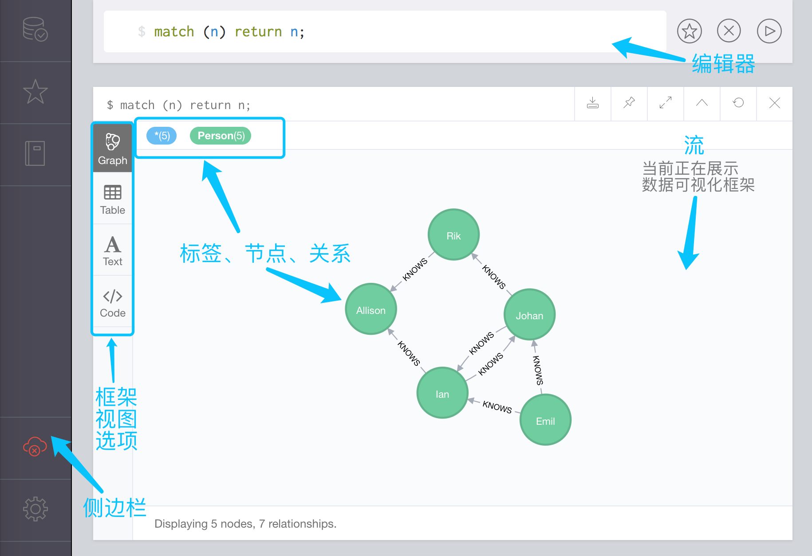
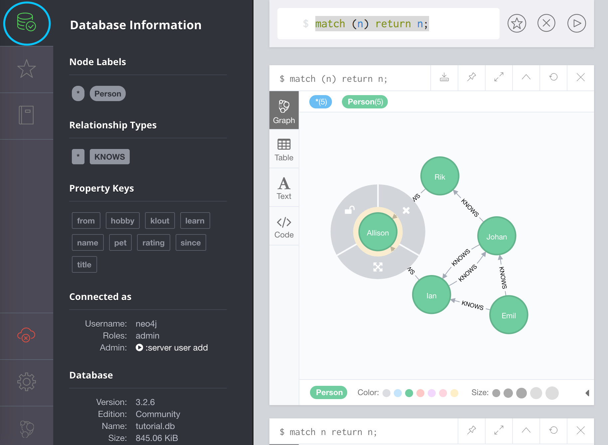
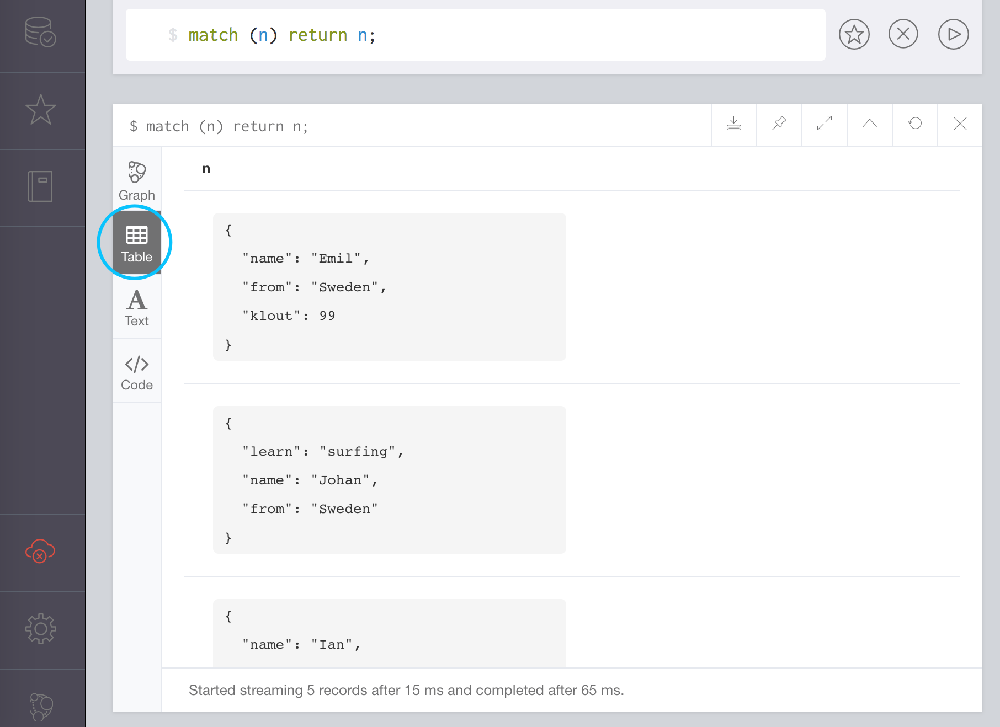

Neo4j 浏览器是一个可以通过 Web 浏览器运行的图形用户界面（GUI）
Neo4j 浏览器可以用来添加数据、运行查询语句、创建关系等等。它还提供了一种简单的方式来可视化数据库中的数据。
概览
下图是 Neo4j 浏览器概览

编辑器
这里是你输入查询语句和命令的地方，比如创建或检索数据。你可以随时通过输入 :help 并按下回车键（或者点击编辑器右侧的「运行」箭头）来获取帮助。
流
这里是展示查询结果的地方，每个结果有自己的框架，新的结果框会出现在前一个结果框的上边。所以如果需要的话，你可以向下滚动并查看之前的查询结果。你可以随时使用 :clear 命令清空这个流。
标签、节点、关系
这些代表了数据库中的数据。点击顶部的任意图标都会在框架的底部显示可选信息。
侧边栏
侧边栏有多个选线，例如查看数据库详情，查看或修改 Neo4j 浏览器设置，查看 Neo4j 文档等等。
点击一个选项会打开更宽一些的侧边栏并提供该选项的详情。
比如，点击「数据库」图标会打开有关数据库的详细信息。

框架视图选项
你能够以不同的方式查看数据。例如，点击 「Table」将会以表格的方式显示节点和关系。
下图是一个以表格方式显示数据的例子：
